This report brings together all observations recorded through the Big
Rock Pool Challenge up to March 2026, with a closer look at activity
during Quarter 1 of 2026 (January–March).
All project data
The Big Rock Pool Challenge commenced in October 2024 at hubs located
at Castle Beach, Falmouth and Mount Batten, Plymouth. In October 2025,
seven new hubs joined the Big Rock Pool Challenge:
- Shoeburyness, Southend-on-Sea
- Kilve Beach, Somerset
- Beadnell Haven, Northumberland
- East Sands, St Andrews
- Lee-on-the-Solent, Hampshire
- Menai Bridge, Bangor
- Ovingdean, Brighton
Data presented in this section of the report reflect all Big Rock
Pool Challenge records from the start of the project in October 2024,
until the end of Quarter 1 (end of March) 2026.
To view data from Quarter 1 of 2026 only, please see the
second half of this report, or click
here.
Overall Project Summary
23,379 observations
·
711 contributors
·
1,391 species
Species are grouped into higher-level “iconic taxa” categories based
on their taxonomic ancestry. This grouping simplifies complex
species-level data into broader biological categories (e.g. molluscs,
crustaceans, algae), allowing clearer interpretation of community
structure across sites and time periods.
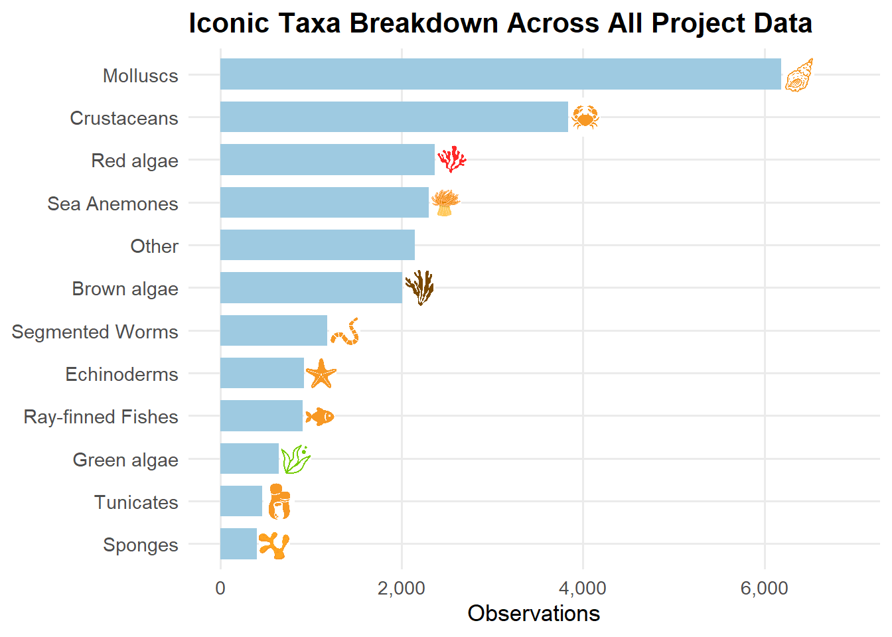
The Big Rock Pool Challenge is powered by people. Every observation
and identification is a contribution to a shared understanding of
coastal biodiversity.
Some participants frequently attend events and submit records, while
others help out by identifying species through verification on
iNaturalist- all contributions are equally valuable in building the
dataset.
For all project data until end of March 2026, records were submitted by 711 recorders,
and verified to research grade by 1370 identifiers.
The top recorders and identifiers are presented below- thank you for
your efforts!
Overall Top Identifiers
aqualydon
3,831 identifications
mathijs_zonneveld
1,814 identifications
hamlet_ben
1,805 identifications
Each hub represents a local coastal site where volunteers return to
record marine life over time. These locations form the backbone of the
Big Rock Pool Challenge network.
Because each hub has been running for different lengths of time, and
is explored by different groups of people, the number of records varies,
but every contribution adds valuable information about rock pool
communities at that site.
Hubs are arranged in alphabetical order.
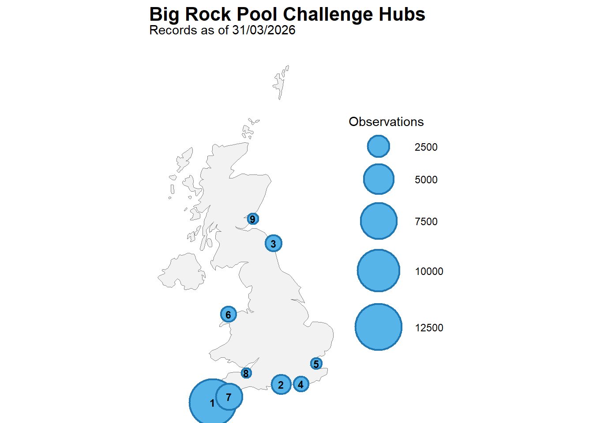
| 3 |
Beadnell Haven |
1311 |
35 |
280 |
| 1 |
Castle Beach |
12627 |
327 |
949 |
| 9 |
East Sands |
526 |
32 |
170 |
| 8 |
Kilve Beach |
405 |
14 |
131 |
| 2 |
Lee-on-the-Solent |
1934 |
56 |
265 |
| 6 |
Menai Bridge |
1165 |
53 |
311 |
| 7 |
Mount Batten |
3790 |
168 |
521 |
| 4 |
Ovingdean |
1081 |
42 |
212 |
| 5 |
Shoeburyness |
540 |
20 |
159 |
During BioBlitz Battle games, all species recorded earn a score.
These scores reflect how often this species is recorded in the overall
Big Rock Pool Challenge dataset. The higher scoring species are those
that are recorded less often within the project and may represent more
unusual or less commonly observed species.
In this report, scores are given between 1-100, according to our
current scoring system 2.1
The highest scoring species recorded during this period are presented
below.
Highest Scoring Species Across All Project Data
(c) willjacobsmith, some rights reserved (CC BY-NC)
Score:
100
Observed by
pixnaturalist
Hub
Mount Batten
(c) João Pedro Silva, some rights reserved (CC BY-NC)
Score:
100
Observed by
aliceyypoo
Hub
Castle Beach
(c) Brian du Preez, some rights reserved (CC BY-SA), uploaded by Brian du Preez
Score:
100
Observed by
leonie48597
Hub
East Sands
Hub Summaries
A breakdown of records collected at each Big Rock Pool Challenge hub
is presented below, including key contributors, iconic taxa grouping,
and top scoring species.

Beadnell Haven
1,497
observations ·
35
contributors ·
280
species
Iconic Taxa Composition
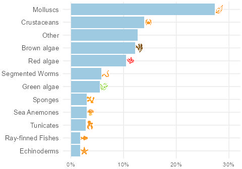
Top iconic groups:
Molluscs, Crustaceans, Brown algae
Top Recorders

janedixon13june70
253 observations

scubasteveseahouses
246 observations
georginafuller
173 observations
Top Identifiers
janedixon13june70
566 identifications
scubasteveseahouses
215 identifications

ffnaturalist
208 identifications
Top Scoring Species
Rhyssoplax polita
Rarity score: 100
Observed by
kiera_mccabe
Eulalia viridis
Rarity score: 75
Observed by
debsbon

(c) João Pedro Silva, some rights reserved (CC BY-NC)
Oscarella lobularis
Rarity score: 75
Observed by
michaelonthemountain

Castle Beach
14,025
observations ·
327
contributors ·
949
species
Iconic Taxa Composition
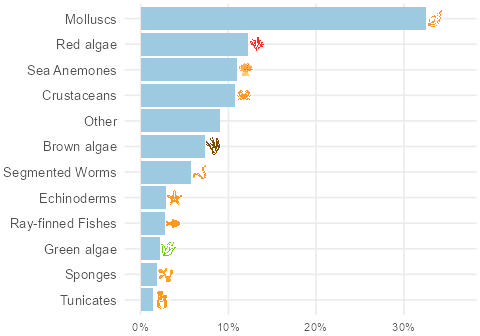
Top iconic groups:
Molluscs, Crustaceans, Red algae
Top Recorders

aqualydon
1,092 observations

keasty69
1,026 observations

drsarahcharles
562 observations
Top Identifiers
aqualydon
3,808 identifications

rachel_edworthy
1,438 identifications

f_izzy
1,388 identifications
Top Scoring Species

(c) João Pedro Silva, some rights reserved (CC BY-NC)
Anilocra physodes
Rarity score: 100
Observed by
aliceyypoo

(c) Chris Taklis, some rights reserved (CC BY), uploaded by Chris Taklis
Asperococcus bullosus
Rarity score: 100
Observed by
ben_1886

(c) François Roche, some rights reserved (CC BY-NC), uploaded by François Roche
Asterina
Rarity score: 100
Observed by
kaytom_05

East Sands
608
observations ·
32
contributors ·
170
species
Iconic Taxa Composition
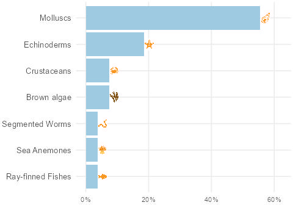
Top iconic groups:
Molluscs, Crustaceans, Brown algae
Top Recorders

amyb4
79 observations
ruthwrightinns
66 observations
alex5752
42 observations
Top Identifiers

hamlet_ben
105 identifications
amyb4
74 identifications

mathijs_zonneveld
68 identifications
Top Scoring Species

(c) Brian du Preez, some rights reserved (CC BY-SA), uploaded by Brian du Preez
Anomia achaeus
Rarity score: 100
Observed by
leonie48597

(c) Donald Davesne, some rights reserved (CC BY), uploaded by Donald Davesne
Dictyota fasciola
Rarity score: 100
Observed by
rkehrer94

(c) Wayne Martin, some rights reserved (CC BY-NC), uploaded by Wayne Martin
Ceramium virgatum
Rarity score: 62
Observed by
nickparlamis

Kilve Beach
469
observations ·
14
contributors ·
131
species
Iconic Taxa Composition
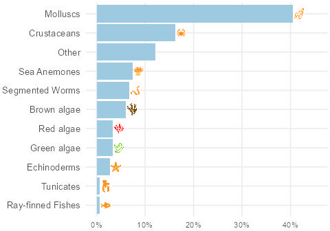
Top iconic groups:
Molluscs, Crustaceans, Sea Anemones
Top Recorders

sharkeee
87 observations
jake314159
86 observations

tecek
77 observations
Top Identifiers
tecek
207 identifications
sharkeee
106 identifications

adrilipinska
81 identifications
Top Scoring Species

(c) Sequoia Janirella Wrens, some rights reserved (CC BY-NC), uploaded by Sequoia Janirella Wrens
Jaera albifrons
Rarity score: 100
Observed by
sharkeee
Mastocarpus jardinii
Rarity score: 100
Observed by
jennie_guard

(c) Rebecca Johnson, some rights reserved (CC BY-NC), uploaded by Rebecca Johnson
Osmundea spectabilis
Rarity score: 88
Observed by
jennie_guard

Lee-on-the-Solent
2,116
observations ·
56
contributors ·
265
species
Iconic Taxa Composition
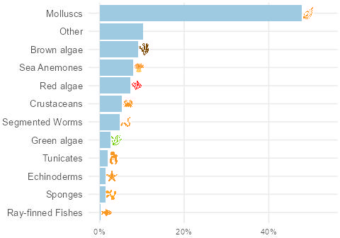
Top iconic groups:
Molluscs, Other, Brown algae
Top Recorders

kitty_t
180 observations

eveahh
178 observations

idlepigeon
150 observations
Top Identifiers

zoe_underwater
657 identifications

ian-creasey
497 identifications
mbray61
476 identifications
Top Scoring Species

(c) João Pedro Silva, some rights reserved (CC BY-NC)
Microcosmus claudicans
Rarity score: 100
Observed by
nicolasjouault

(c) Frédéric ANDRE, some rights reserved (CC BY-NC), uploaded by Frédéric ANDRE
Euphrosine foliosa
Rarity score: 88
Observed by
nicolasjouault

(c) Janine Baker, some rights reserved (CC BY-NC), uploaded by Janine Baker
Grateloupia subpectinata
Rarity score: 88
Observed by
nicolasjouault

Menai Bridge
1,275
observations ·
53
contributors ·
311
species
Iconic Taxa Composition
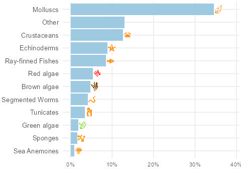
Top iconic groups:
Molluscs, Crustaceans, Other
Top Recorders

yolandave_24
157 observations

unorthodox_sketch
114 observations

bugboycaleb
97 observations
Top Identifiers
yolandave_24
540 identifications
unorthodox_sketch
244 identifications

njacko
163 identifications
Top Scoring Species

(c) Siena McKim, some rights reserved (CC BY-NC), uploaded by Siena McKim
Ericthonius
Rarity score: 81
Observed by
unorthodox_sketch

(c) Christine Morrow, some rights reserved (CC BY-NC), uploaded by Christine Morrow
Harmothoe clavigera
Rarity score: 81
Observed by
njacko

(c) Chris Isaacs, some rights reserved (CC BY-NC), uploaded by Chris Isaacs
Nephtys hombergii
Rarity score: 81
Observed by
hollydate

Mount Batten
4,210
observations ·
168
contributors ·
521
species
Iconic Taxa Composition
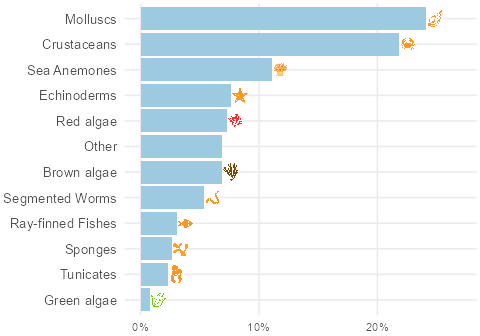
Top iconic groups:
Molluscs, Crustaceans, Other
Top Recorders
oftd
222 observations
pixnaturalist
144 observations

phoebe_marshman
117 observations
Top Identifiers
kylemillmbio
998 identifications

zrussell
625 identifications

ngq15
441 identifications
Top Scoring Species

(c) willjacobsmith, some rights reserved (CC BY-NC)
Aglaophamus macroura
Rarity score: 100
Observed by
pixnaturalist

(c) Leslie Harris, some rights reserved (CC BY-NC), uploaded by Leslie Harris
Capitella
Rarity score: 100
Observed by
njacko

(c) Alfonso Herrera Bachiller, some rights reserved (CC BY-NC-SA)
Cephalothrix
Rarity score: 100
Observed by
davidlyu0604

Ovingdean
1,229
observations ·
42
contributors ·
212
species
Iconic Taxa Composition
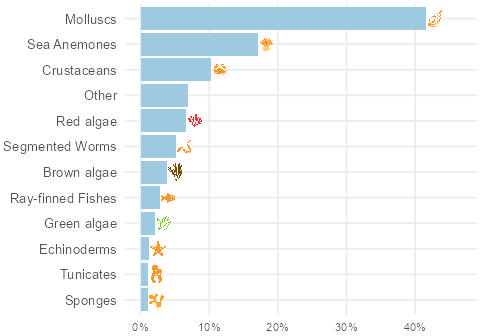
Top iconic groups:
Molluscs, Crustaceans, Sea Anemones
Top Recorders

raphanaja
140 observations

sophie_seasearch
96 observations
kimbog
93 observations
Top Identifiers
raphanaja
373 identifications

ephyra
278 identifications
hamlet_ben
171 identifications
Top Scoring Species

(c) rickt, some rights reserved (CC BY-NC), uploaded by rickt
Petalonia fascia
Rarity score: 100
Observed by
raphanaja
Barnea parva
Rarity score: 81
Observed by
raphanaja

(c) Bernard Picton, some rights reserved (CC BY), uploaded by Bernard Picton
Halopteris filicina
Rarity score: 81
Observed by
ephyra

Shoeburyness
697
observations ·
20
contributors ·
159
species
Iconic Taxa Composition
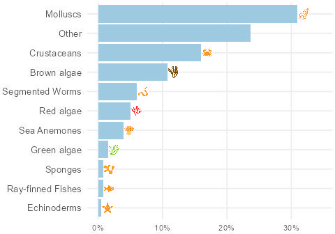
Top iconic groups:
Molluscs, Other, Crustaceans
Top Recorders

beachschoolexplorers
217 observations
mariajm76
91 observations
bronwen_bae
65 observations
Top Identifiers
beachschoolexplorers
223 identifications
laurarpp
80 identifications
bronwen_bae
63 identifications
Top Scoring Species

(c) David McCorquodale, some rights reserved (CC BY-NC), uploaded by David McCorquodale
Sporobolus
Rarity score: 100
Observed by
stubbo

(c) Susan Sawyer, some rights reserved (CC BY-NC), uploaded by Susan Sawyer
Ophrydium
Rarity score: 88
Observed by
cmee2
Thyone
Rarity score: 72
Observed by
beachschoolexplorers


.png)


.jpg)